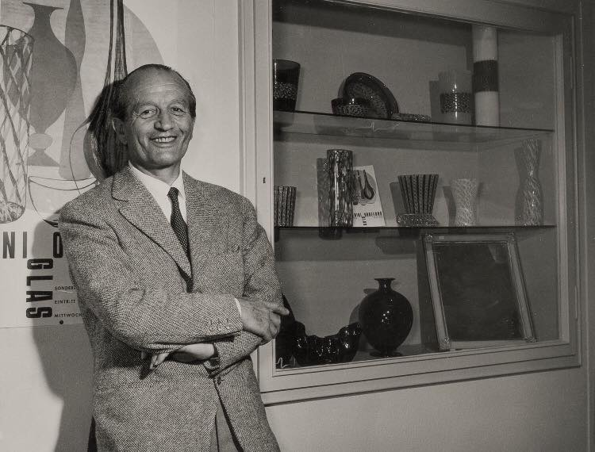
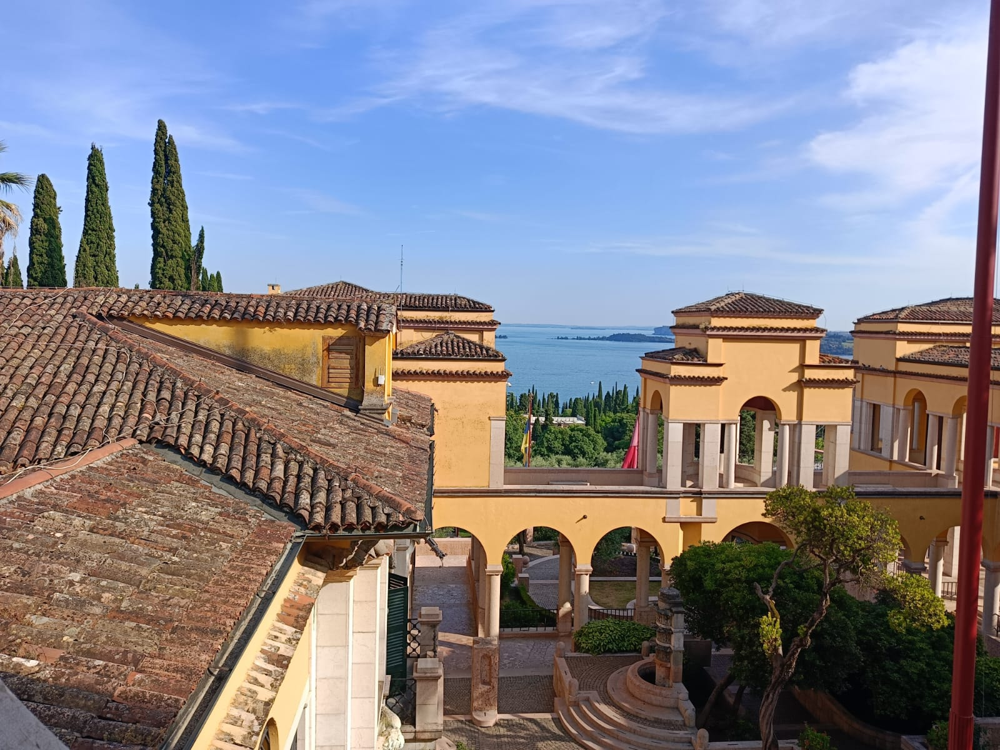

Il catalogo raccoglie tutti gli oggetti schedati, con schede complete di dati tecnici, provenienza, collocazione attuale e riferimenti bibliografici. È disponibile la ricerca per parola chiave, categoria e filtri combinati.
Catalogo completoScegli un percorso tematico per orientarti tra le opere, i protagonisti e i luoghi del Dèco italiano.

Materiali e tecniche
Vetro, ceramica, ferro battuto, tessuti e smalti: il saper fare artigianale che ha dato corpo al gusto decorativo del periodo.
Esplora
Persone
Pittori, scultori, ceramisti, fabbri d'arte e i loro committenti: i protagonisti che hanno costruito l'estetica dannunziana.
Esplora
Luoghi
Musei, case museo, manifatture e collezioni private: i luoghi dove il Dèco italiano si è sedimentato e si può ancora incontrare.
Esplora